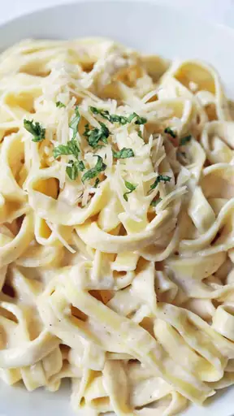

Delicious Fettuccine Alfredo

Description
This recipe will teach you how to create a staple Italian dish, beloved by all: Fettuccine Alfredo
Ingredients
- Fettuccine pasta
- Butter: 2 sticks
- 1 cup of heravy cream
- Salt, pepper, and garlic salt
- Romano and Parmesan cheese
Directions
- Bring a pot of salted water to a boil. Once boiling, cook pasta for 15-20 minutes or until al dente.
- While pasta cooks, melt butter and the cream together in a large pan. Season with salt, pepper, and garlic salt. bring to a simmer and then add cheese until melted.
- Once pasta is finished, drain and combine with sauce in pan. Toss pasta until coated in sauce, then divide between plates or bowls.
- Garish your Fettuccine Alfredo with whatever you like. I like to use cilantro. Serve and enjoy!